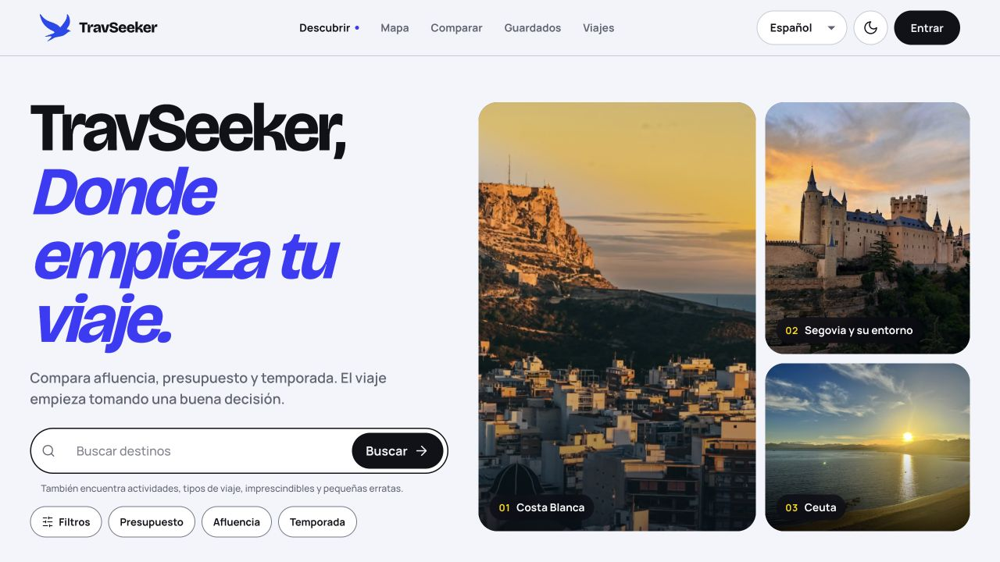
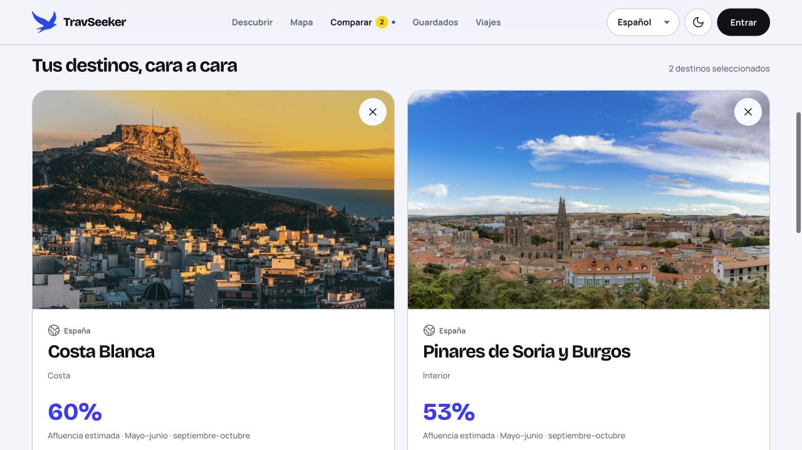

CASO DE PROYECTO · DESARROLLO FULL STACK
Travseeker
Elegir dónde viajar, con más contexto.
Una aplicación web para descubrir destinos turísticos en España, comparar opciones y organizar itinerarios. El proyecto está en desarrollo desde 2026 y se puede visitar en su web pública.
El código fuente se mantiene en un repositorio privado para proteger la implementación del producto. Esta ficha presenta el producto y mi trabajo técnico.


EL PROBLEMA
De una idea de viaje a una decisión.
Elegir un destino implica valorar más que sus fotografías: el presupuesto, la afluencia y la temporada también influyen. Travseeker reúne esa información para ayudar a explorar alternativas antes de organizar el viaje.
El recorrido conecta el descubrimiento de destinos con su comparación y la planificación de itinerarios.
EL PRODUCTO
Qué permite hacer.
- Descubrir destinos
- Buscar por destino, municipio, actividad o tipo de viaje y acotar opciones por presupuesto, afluencia y temporada.
- Explorar el contexto
- Consultar fichas de destino y municipios, información del lugar y mapas interactivos.
- Comparar alternativas
- Reunir varios destinos en una vista para contrastar sus características antes de elegir.
- Organizar el viaje
- Guardar favoritos y trabajar con colecciones e itinerarios vinculados a una cuenta de usuario.

MI APORTACIÓN
De la interfaz a los datos.
Participo en el desarrollo full stack de Travseeker. Mi trabajo conecta las pantallas que utiliza el visitante con una API REST y una base de datos relacional.
- Frontend: desarrollo de la interfaz con React y TypeScript, búsqueda y filtros, mapas y adaptación a distintos tamaños de pantalla.
- Backend: desarrollo de una API REST con Node.js y Express para consultar y gestionar destinos e itinerarios.
- Datos: trabajo con Prisma y PostgreSQL para el acceso y la persistencia de la información.
- Calidad: incorporación de pruebas automatizadas de frontend y backend con el runner de Node.js.
ARQUITECTURA GENERAL
Tres capas que trabajan juntas.
-
Interfaz
React + TypeScript
Presenta los destinos y recoge las búsquedas, filtros y acciones del usuario. Vite prepara la aplicación para desarrollo y producción.
-
API REST
Node.js + Express
Recibe las peticiones, aplica las reglas de la aplicación y coordina el acceso a la información.
-
Persistencia
Prisma + PostgreSQL
Gestiona las consultas y almacena los datos que necesita la plataforma.
Vista conceptual del sistema para explicar el proyecto.
DECISIONES TÉCNICAS
Cómo se organiza el trabajo.
Responsabilidades separadas
La interfaz, la API y la persistencia tienen funciones distintas. En el frontend, la organización por funcionalidades agrupa los componentes y la lógica de cada área. En el backend, las rutas, los controladores y los servicios separan la entrada de una petición de su resolución.
Una experiencia adaptable
El diseño responsive permite consultar destinos y planificar desde pantallas de distintos tamaños. TypeScript ayuda a describir los datos y las relaciones entre las piezas del frontend.
Comprobaciones durante el desarrollo
El proyecto dispone de pruebas de frontend y backend, revisión del código y compilación de producción. Estas comprobaciones ayudan a detectar errores al introducir cambios.
ESTADO Y ALCANCE
Un producto en evolución.
Travseeker tiene una web pública y continúa en desarrollo. Las capturas muestran la interfaz disponible en la fecha indicada; algunas funciones, como guardar destinos o gestionar viajes, requieren iniciar sesión.
Esta presentación permite conocer el producto y mi aportación manteniendo privado su código fuente.